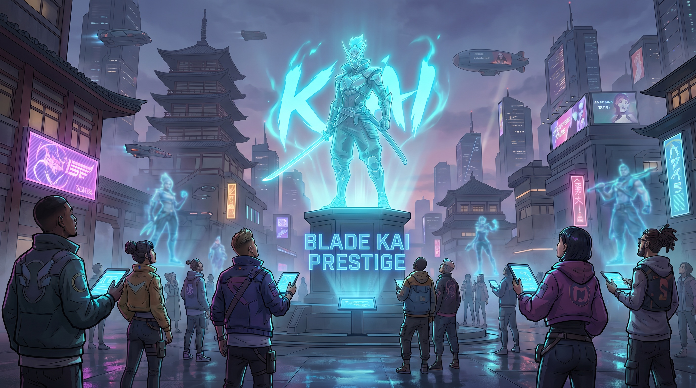
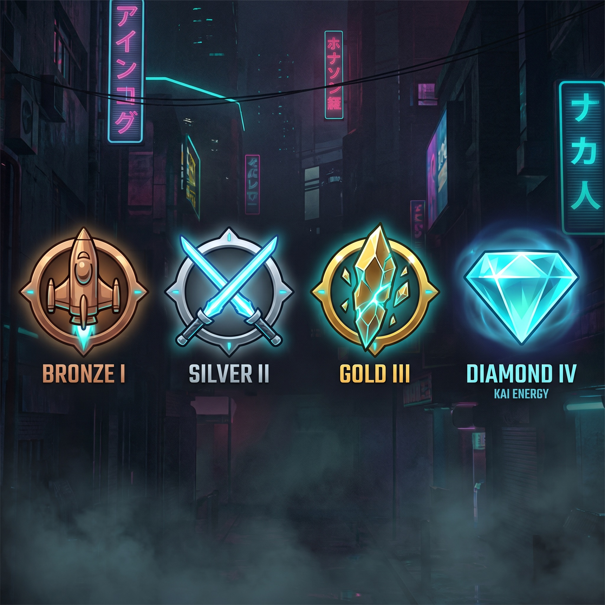

Modello COD-style: livello 0→100, poi 4 prestigi. Il livello sblocca opzioni e accessi, mai potenza. Le ricompense prestigio sono solo cosmetiche e di status.
La decisione che tiene insieme tutto il design competitivo: la progressione non vende potenza. È il ponte che i power-up non attraversano mai.
Salendo apri nuove armi da provare, modalità, aree, slot, format di torneo. Più scelte, non numeri più alti. Un veterano ha più strumenti, non un fucile che fa più danno.
Nessun livello ti rende oggettivamente più forte in duello di un nuovo arrivato bravo. Il matchmaking resta basato sulla skill, non sull'anzianità. Il grind compra profondità, non vantaggio.
La curva principale. Veloce per step (niente muro da 200 ore), con un orizzonte di mesi. Ogni livello è una piccola porta che si apre.
Sblocchi le basi: classi, prime armi, Arena e Deathmatch. Impari il movimento.
Si aprono le modalità obiettivo, le zone gialle/rosse, i primi dungeon. Il mondo si allarga.
Accesso a tornei sponsor, format avanzati, zone nere. Cominci a costruire reputazione.
Tutto sbloccato. Sei pronto per il primo Prestigio e per giocartela ai livelli alti del Circuito.
Raggiunto il 100, puoi prestigiare: ricominci la curva in cambio di ricompense puramente cosmetiche e di status. Sono il vero endgame del prestigio sociale, leggibile a vista in città.


Mantello esclusivo + titolo in città. Badge bronzo: la nave del Ritorno. Il primo segno che non sei un novizio.
Skin arma animata (glow KAI) + emote. Badge argento: doppia lama incrociata. La tua arma comincia a raccontare la tua storia.
Maschera leggendaria + aura città. Badge oro: pietra KAI in frantumi. Entri tra i nomi che la gente riconosce.
Nome in ciano ovunque + statua/holo in Plaza tra i campioni. Ti chiami come il gioco. L'apice dello status.